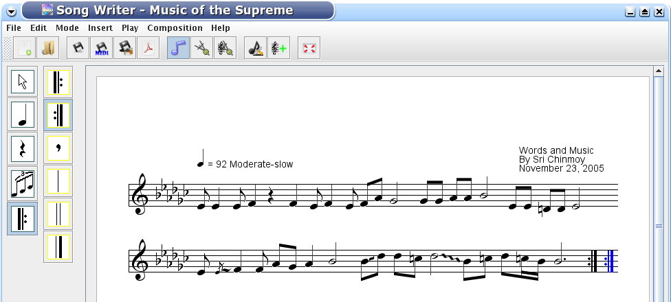

This is the fastest way to enter a song. You can switch to the keyboard mode by selecting the Edit|Control|Keyboard menu.
You can select notes with the numbers six to one, grace note is "G", glissando is SHIFT+G, rests are CTRL or APPLE+6(or 5,...,1).
You can find the whole list in the Help|Keymap menu. In the keyboard mode you select the pitch of the note by up and down arrows, and
you can move the notes horizontally with left and right arrows. This movement is for the order of the notes and not for the exact
horizontal placement.
Now we start typing. The first note is an eighth, so we press 3 and move the note to E, and press Enter. The second note is a grace note, so we press G, Enter. Then a slide, press SHIFT+G, press the UP arrow to move the slide, Enter. Then a quarter note, press 4, etc. If you want to enter a note with a natural
press N before entering, for a flat, press F, for a dot press dot, for an accent press ">".
If the program beams something automatically that should not be beamed, press B. This key unbeams the last two notes if they are beamed
and beams the last two notes if they are not beamed and less than a quarter note. The functionality is the same with T that triplets or
untriplets the last three notes and CTRL or APPLE+T that ties or unties the last two notes. In SongScribe two notes can be
tied if they are in the same pitch. When we finish the second line, we get the following result.

The repeat sign behaves exatly the same way as notes except it cannot be moved up and down. We pressed R for right repeat.
Now we can play back the song to see if we entered the notes correctly.